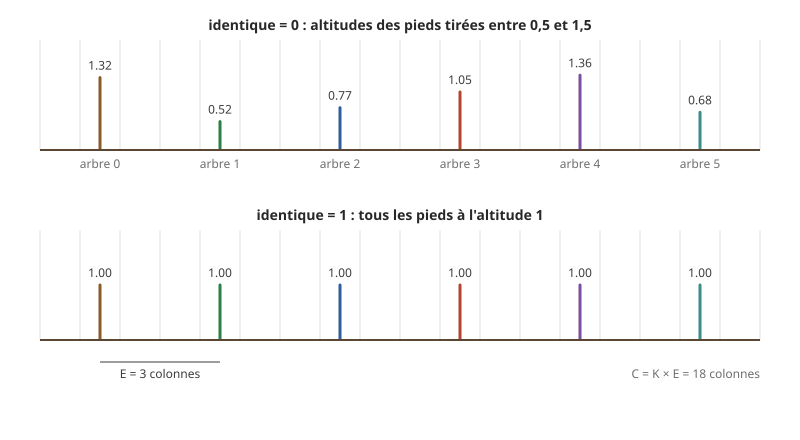

TI301 – Algorithmique et Structures de données 2 · Projet Informatique et Mathématiques
La forêt et la lumière Partie 3
Ce projet est rédigé en commun pour les modules SDD2 et Probabilités.
Idée originale, conception, réalisation : Nicolas FLASQUE Validation pour le module de probabilités : Federico ZALAMEA, Brice JUANICO Site web du projet et animations : Nicolas FLASQUE et Claude code pro - modèle Opus 5.5
⚠️ ATTENTION : ceci est indispensable pour la suite du projet. Avant d'écrire la moindre ligne de la partie 3, un membre de l'équipe ajoute au dépôt de l'équipe les fichiers fournis pour cette partie, en suivant le mode d'emploi Récupérer les fichiers de la partie 3, comme pour la partie 2. Les autres membres font ensuite Git → Update Project.
Une seule forêt ne nous apprend pas grand-chose : avec les mêmes réglages, mais une autre graine, le résultat peut être très différent. Pour connaître le comportement « habituel » d'une forêt, il faut en simuler des centaines, et étudier la répartition des résultats obtenus.
Dans cette partie, vous allez lancer des campagnes de simulations, écrire leurs résultats dans des fichiers, puis écrire un petit outil d'analyse qui les résume et dessine leur histogramme. Vous l'utiliserez pour observer deux mesures des arbres : leur cime et leur extension, puis leurs moyennes par forêt.
La partie 3 utilise toute la forêt de la partie 2 : createForest, plantForest, simulateForest et freeForest doivent être terminées et validées avant de commencer. Les fichiers des parties 1 et 2 ne sont pas modifiés : tout le code de la partie 3 est écrit dans de nouveaux fichiers.
Organisation du projet
Partie 1 Faire pousser au hasard un arbre seul, en pleine lumière, et l'enregistrer dans un fichier ;
Partie 2 Faire pousser une forêt entière, dans laquelle les arbres se font de l'ombre ;
Partie 3 Simuler des centaines de forêts, et analyser les résultats.
1Simuler beaucoup de forêts
Une campagne simule \(R\) forêts avec les mêmes réglages, mais chacune avec sa propre graine. Après \(S\) saisons, les mesures de chaque forêt sont écrites dans deux fichiers CSV, que l'on peut aussi ouvrir avec un tableur.
Les réglages d'une campagne
Chaque réglage est donné au programme sur la ligne de commande (voir l'étape 1) ; s'il est absent, sa valeur par défaut est utilisée.
Réglage
Paramètre
Rôle
Par défaut
\(K\)
--K
nombre d'arbres de chaque forêt
50
\(E\)
--E
écartement : un arbre toutes les \(E\) colonnes
3
\(A\)
--A
part de lumière retenue par chaque extrémité de rameau, entre 0 et 1
0,25
\(S\)
--S
nombre de saisons
120
plantation
--identique
sans ce paramètre, l'altitude de chaque pied est tirée au hasard ; avec lui, tous les pieds sont à l'altitude 1
au hasard
\(R\)
--R
nombre de forêts de la campagne
1
\(g\)
--graine
graine de la campagne : la forêt numéro \(r\) est plantée avec la graine \(g + r\)
1
sortie
--sortie
début du nom des deux fichiers de résultats
output/campagne
\(H_{max}\)
(fixé)
nombre de rangées des grilles d'occupation et de lumière
160
\(P_{max}\)
(fixé)
nombre de rameaux à partir duquel un arbre est tronqué
20 000
La forêt : \(K\), \(E\) et \(A\)
Ce sont les réglages de la partie 2. La forêt est une ligne de \(K\) arbres ; l'arbre numéro \(i\) est planté en \(x = i \times E + E / 2\), et la forêt compte \(C = K \times E\) colonnes. Elle fait le tour : l'arbre \(K - 1\) est voisin de l'arbre 0.
Plus l'écartement \(E\) est petit, plus les arbres sont serrés, et plus tôt ils se font de l'ombre.
\(A\) règle la force de l'ombre : chaque extrémité de rameau retient la part \(A\) de la lumière qui la traverse. Avec \(A = 0\), il n'y a aucune ombre, et chaque arbre pousse comme en partie 1 ; plus \(A\) est grand, plus l'ombre est forte.

La plantation d'une forêt de \(K = 6\) arbres, avec \(E = 3\) : les mêmes positions, mais deux façons de choisir l'altitude des pieds (graine 101)
La durée : \(S\), \(H_{max}\) et \(P_{max}\)
Chaque forêt pousse pendant \(S\) saisons, puis ses mesures sont écrites. Les deux autres réglages de la partie 2 sont fixés pour toute la partie 3 :
\(H_{max} = 160\) rangées suffisent pour 120 saisons : un arbre gagne au plus une génération par saison, et sa cime monte au plus de 1,3 par saison ;
\(P_{max} = 20\,000\) : un arbre qui atteint ce nombre de rameaux est tronqué, et ne pousse plus. Le fichier des arbres indique, dans sa colonne tronque, les arbres qui l'ont été.
La plantation : --identique
Par défaut, comme en partie 2, l'altitude du pied de chaque arbre est tirée au hasard entre 0,5 et 1,5 : certains arbres partent avec un peu d'avance sur leurs voisins. Avec le paramètre --identique, qui n'a pas de valeur, tous les pieds sont à l'altitude 1 : aucun arbre ne part avec de l'avance, et les différences entre arbres ne viennent plus que du hasard de leur pousse.
Comparer les deux plantations permet de savoir ce qui, dans le point de départ, influe sur le résultat. Attention : avec la même graine, les deux forêts ne sont pas « la même forêt avec des pieds différents ». La plantation au hasard fait \(K\) tirages de plus avant la première saison : tous les tirages de la pousse sont décalés, et les deux forêts sont entièrement différentes.
La même graine 101, avec \(K = 8\), \(E = 3\), \(A = 0{,}25\), après 20 saisons : plantation au hasard à gauche, identique à droite (une couleur par arbre ; les rameaux qui sortent d'un côté reviennent de l'autre)
Plusieurs forêts : \(R\) et la graine
La forêt numéro \(r\), de 0 à \(R - 1\), est plantée avec la graine \(g + r\), où \(g\) est la graine de la campagne. Toutes les forêts ont les mêmes réglages, mais pas les mêmes tirages : elles sont toutes différentes. Chacune peut être refaite seule, avec la partie 2 et sa graine ; une campagne de graine 101 et de 40 forêts contient les mêmes forêts que les 40 premières d'une campagne de graine 101 et de 400 forêts.
Les forêts 0, 1 et 2 d'une campagne de graine 101 : mêmes réglages qu'à gauche de la figure précédente, trois graines, trois forêts différentes
Les fichiers de résultats : --sortie
La campagne écrit deux fichiers, dont le nom commence par la valeur de --sortie : <sortie>_arbres.csv, avec une ligne par arbre, et <sortie>_forets.csv, avec une ligne par forêt. Leur format est décrit à l'étape 1. Avec --sortie output/C1, ce sont output/C1_arbres.csv et output/C1_forets.csv.
Étape 1Une campagne de simulations
Objectif
Écrire un programme qui lance une campagne dont les réglages sont donnés sur la ligne de commande, et qui écrit ses résultats dans deux fichiers.
À faire
Écrivez la structure et les prototypes dans campagne.h, les définitions dans campagne.c, et le programme dans src/main_p3_etape1.c (cible CMake p3_etape_1). Ces trois fichiers sont fournis vides.
La campagne
typedef struct s_campagne {
int K, E, S; // nombre d'arbres, écartement, nombre de saisons
double A; // part de lumière retenue par une extrémité de rameau
int R; // nombre de forêts à simuler
int graine; // la forêt numéro r est plantée avec la graine graine + r
int identique; // 1 : plantation identique
char sortie[LONGUEUR_NOM]; // début du nom des deux fichiers de résultats
} t_campagne;
Toutes les forêts ont \(H_{max} = 160\) rangées et \(P_{max} = 20\,000\) : définissez ces deux valeurs, et LONGUEUR_NOM (256), par des #define dans campagne.h.
t_campagne createCampaign(void)
Rôle : crée une campagne avec les réglages par défaut : \(K = 50\), \(E = 3\), \(A = 0{,}25\), \(S = 120\), \(R = 1\), graine 1, plantation au hasard, et sortie vaut "output/campagne".
int runCampaign(t_campagne c)
Rôle : simule les \(R\) forêts de la campagne et écrit leurs mesures, après \(S\) saisons, dans les fichiers <sortie>_arbres.csv et <sortie>_forets.csv. Elle affiche une ligne par forêt, puis la durée totale du calcul, et renvoie 1, ou 0 si l'un des fichiers n'a pas pu être créé.
Indices :
pour chaque forêt : createForest, plantForest avec la graine c.graine + r, simulateForest, puis les lignes des fichiers, et enfin freeForest ; une seule forêt est en mémoire à la fois ;
les noms des fichiers se construisent avec sprintf(nom, "%s_arbres.csv", c.sortie) ;
la durée se mesure avec clock() de <time.h> : (double) (clock() - debut) / CLOCKS_PER_SEC secondes.
Les fichiers de résultats
Chaque fichier commence par une ligne de commentaire, qui commence par # et rappelle tous les réglages, puis une ligne d'en-tête, puis les données. Les valeurs sont séparées par des points-virgules, et les nombres à virgule sont écrits avec un point.
Le fichier des arbres a une ligne par arbre, soit \(R \times K\) lignes de données, avec les mesures de la partie 2 (cime et extension avec 3 chiffres après la virgule) :
Le fichier des forêts a une ligne par forêt : son nombre total de rameaux, puis la moyenne des cimes et la moyenne des extensions de ses \(K\) arbres (4 chiffres après la virgule) :
Les réglages sont donnés sur la ligne de commande, grâce aux paramètres argc et argv de la fonction main. Chaque réglage est précédé de son nom, ce qui permet de les donner dans n'importe quel ordre, et d'en omettre certains : la valeur par défaut est alors utilisée.
Les paramètres possibles, leur rôle et leur valeur par défaut sont dans le tableau Les réglages d'une campagne.
int main(int argc, char *argv[])
{
t_campagne c = createCampaign(); // valeurs par défaut
int ok = 1;
for (int i = 1; i < argc && ok; i++)
{
if (strcmp(argv[i], "--K") == 0 && i + 1 < argc)
{
c.K = atoi(argv[++i]); // conversion texte -> entier
}
else if (strcmp(argv[i], "--A") == 0 && i + 1 < argc)
{
c.A = atof(argv[++i]); // conversion texte -> réel
}
// traiter de même les autres paramètres
else
{
printf("Parametre inconnu : %s\n", argv[i]);
ok = 0;
}
}
// lancer la campagne si ok vaut encore 1
...
}
Dans CLion, les paramètres se règlent dans Run → Edit Configurations…, champ Program arguments. La configuration fournie p3_etape_1 contient déjà ceux de la campagne C1 (voir l'étape 3). Le dossier output/ existe déjà dans votre projet, et Git ne suit pas son contenu.
Validation de l'étape 1
Avec --K 24 --E 3 --A 0.25 --S 32 --R 1 --graine 1, vous retrouvez la forêt de validation de l'étape 6 de la partie 2 : 6 809 rameaux ; l'arbre 0 a pour ligne 0;0;352;32;33.009;17.479;0, et l'arbre 7 0;7;17;8;7.879;3.941;0 ; la ligne de la forêt est 0;6809;27.7260;13.7903.
Avec --R 3 et les mêmes autres réglages, les trois forêts ont 6 809, 6 703 et 6 400 rameaux. La forêt 1 de cette campagne est la forêt 0 d'une campagne de graine 2.
Deux campagnes lancées avec les mêmes réglages produisent exactement les mêmes fichiers.
Le fichier des arbres de la campagne C1 (\(K = 50\), \(R = 40\)) contient 2 000 lignes de données, et celui des forêts 40 ; ils s'ouvrent correctement dans un tableur.
Un paramètre inconnu, ou un paramètre sans sa valeur (--K à la fin de la ligne), affiche un message et ne lance aucune simulation.
2Résumer des valeurs
La campagne C1 donne 2 000 cimes d'arbres. Pour résumer ces valeurs, on utilise :
la moyenne des valeurs ;
l'écart-type, qui mesure si les valeurs sont plutôt resserrées autour de la moyenne (petit écart-type) ou plutôt dispersées (grand écart-type) ;
le minimum, le maximum, la médiane (la valeur « du milieu » quand on range les valeurs dans l'ordre croissant) et les quartiles ;
l'indicateur d'asymétrie : il vaut 0 quand les valeurs sont réparties de façon symétrique autour de la moyenne ; il est positif quand quelques valeurs sont beaucoup plus grandes que les autres, négatif quand quelques valeurs sont beaucoup plus petites ;
l'histogramme : on découpe l'intervalle entre le minimum et le maximum en classes de même largeur, et on dessine pour chaque classe une barre dont la longueur indique combien de valeurs y tombent.
écart-type : la racine carrée de la moyenne des carrés des écarts à la moyenne, \(s = \sqrt{\dfrac{(x_1 - m)^2 + \cdots + (x_n - m)^2}{n}}\) ;
indicateur d'asymétrie : la moyenne des cubes des écarts à la moyenne, divisée par \(s^3\), soit \(\dfrac{(x_1 - m)^3 + \cdots + (x_n - m)^3}{n\, s^3}\) ; il vaut 0 si \(s = 0\) ;
médiane : après avoir trié les valeurs, la valeur du milieu si \(n\) est impair, la moyenne des deux valeurs du milieu si \(n\) est pair ;
premier et troisième quartiles : après avoir trié les valeurs, les valeurs placées aux rangs \(\lceil n/4 \rceil\) et \(\lceil 3n/4 \rceil\), en numérotant les rangs à partir de 1.
Étape 2Construire l'histogramme
Objectif
Compter les valeurs de chaque classe, puis afficher l'histogramme dans le terminal, avec une barre de # par classe. La lecture du fichier, les calculs du résumé et le dessin de l'histogramme en SVG sont fournis.
Le module statistiques (statistiques.h et statistiques.c) ne sait rien des forêts : il sert pour n'importe quel fichier CSV dont les valeurs sont séparées par des points-virgules. Les fonctions suivantes y sont écrites ; lisez-les, vous allez les utiliser.
double *readColumn(const char *nom_fichier, const char *colonne, int *p_n)
Lit toutes les valeurs de la colonne colonne du fichier, et renvoie un tableau dynamique de ces valeurs, à libérer avec free ; *p_n reçoit leur nombre. Les lignes qui commencent par # sont ignorées ; la première ligne restante est l'en-tête. Si le fichier ou la colonne n'existe pas, elle affiche un message et renvoie NULL.
void sortValues(double v[], int n)
Trie les valeurs dans l'ordre croissant, avec la fonction qsort de <stdlib.h>.
double computeMean(double v[], int n), double computeStdDev(double v[], int n), double computeSkewness(double v[], int n)
Moyenne, écart-type et indicateur d'asymétrie.
double computeMedian(double trie[], int n), double computeQuartile(double trie[], int n, int q)
Médiane, et premier (\(q = 1\)) ou troisième (\(q = 3\)) quartile, de valeurs déjà triées.
void displaySummary(double v[], int n)
Affiche le nombre de valeurs, la moyenne, l'écart-type, le minimum, le maximum, la médiane, les quartiles et l'asymétrie ; le tableau v n'est pas modifié (le tri se fait sur une copie).
Dessine l'histogramme dans un fichier SVG, à ouvrir avec un navigateur : une barre par classe, les effectifs sur l'axe vertical, les bornes des classes sous l'axe horizontal, et un titre.
histoToSVG reçoit exactement ce que calcule votre fonction computeHistogram : les effectifs, le nombre de classes, le minimum et la largeur d'une classe.
À faire
Écrivez les deux fonctions suivantes dans les fichiers statistiques.h (prototypes) et statistiques.c (définitions), à la suite du code fourni, et testez-les depuis src/main_p3_etape2.c (cible CMake p3_etape_2). Ce programme est fourni : il fait les essais de la validation, affiche vos résultats avec, en dessous, les résultats attendus, et dessine chaque histogramme dans un fichier SVG du dossier output/. Il ne compile qu'une fois les deux fonctions écrites.
int *computeHistogram(double v[], int n, int nb_classes, double *p_min, double *p_largeur)
Rôle : découpe l'intervalle entre le minimum et le maximum des valeurs en nb_classes classes de même largeur, et renvoie un tableau dynamique des effectifs des classes, à libérer avec free. *p_min reçoit le minimum, et *p_largeur la largeur d'une classe.
Indices :
la classe \(i\) va de \(min + i \times largeur\) (compris) à \(min + (i + 1) \times largeur\) (non compris) : une valeur \(x\) tombe dans la classe \(\lfloor (x - min) / largeur \rfloor\) ;
avec cette formule, le maximum tombe dans la classe nb_classes, qui n'existe pas : il appartient à la dernière classe ;
si toutes les valeurs sont égales, la largeur est nulle : mettez-les toutes dans la première classe.
void displayHistogram(int effectifs[], int nb_classes, double min, double largeur)
Rôle : affiche une ligne par classe : ses bornes, son effectif, et une barre de #. La classe la plus remplie a une barre de 50 caractères ; les autres ont une barre proportionnelle à leur effectif, arrondie à l'entier le plus proche.
Indices : attention à la division entière : \(\dfrac{3}{4} \times 50\) n'est pas 3 / 4 * 50 en C.
Validation de l'étape 2
Les fichiers fournis data/test_analyse.csv et data/test_asymetrie.csv ont des valeurs choisies pour que les histogrammes se calculent à la main : faites-le avant de lancer le programme.
test_analyse.csv, colonne valeur (les entiers de 1 à 10), 5 classes : minimum 1, largeur 1,8 ; chaque classe contient 2 valeurs.
Même colonne, 3 classes : largeur 3 ; effectifs 3, 3 et 4, car la dernière classe contient le maximum 10.
test_histo.csv, colonne note (200 notes sur 20), 10 classes : minimum 3,49, largeur 1,532 ; effectifs 9, 7, 18, 25, 36, 40, 23, 26, 12 et 4. C'est l'exemple ci-dessous.
Ouvrez les fichiers output/test_analyse_5.svg, output/test_analyse_3.svg, output/test_asymetrie_5.svg et output/test_histo_10.svg avec un navigateur : les barres doivent avoir les mêmes hauteurs relatives que vos barres de #.
Le programme affiche aussi le résumé de chaque fichier, calculé par displaySummary fournie : pour les entiers de 1 à 10, moyenne 5,5, écart-type 2,8723, médiane 5,5, quartiles 3 et 8, asymétrie 0 ; pour 1, 1, 1, 1, 6, moyenne 2, écart-type 2, médiane 1, asymétrie 1,5. Vérifiez ces valeurs à la main avec les principes de calcul ci-dessus.
Exemple : la sortie de p3_etape_2 pour le fichier test_histo.csv, en 10 classes, puis le dessin de output/test_histo_10.svg.
Le dessin de histoToSVG : les mêmes effectifs que les barres de #
3Observer les forêts
Étape 3L'outil d'analyse
Objectif
Écrire un programme qui résume une colonne d'un fichier CSV, affiche son histogramme dans le terminal et le dessine dans un fichier SVG. Le nom du fichier, celui de la colonne, le nombre de classes et le nom du fichier SVG sont donnés sur la ligne de commande :
Un fichier CSV est un tableau : chaque ligne de données est une ligne du tableau, et chaque nom de l'en-tête désigne une colonne. Résumer une colonne, c'est prendre toutes les valeurs de cette colonne, une par ligne de données, et les décrire par quelques nombres : ceux de Résumer des valeurs.
Dans C1_arbres.csv, chaque ligne est un arbre : la colonne cime contient les 2 000 cimes des 2 000 arbres de la campagne, toutes forêts confondues.
Dans C1_forets.csv, chaque ligne est une forêt : la colonne cime_moy contient 40 valeurs, la cime moyenne de chacune des 40 forêts.
Les autres colonnes de la ligne (le numéro de la forêt, celui de l'arbre…) sont ignorées. Par exemple, le fichier fourni data/test_asymetrie.csv a deux colonnes :
# fichier de test de la partie 3 : deux colonnes, la seconde asymétrique
rang;valeur
1;1
2;1
3;1
4;1
5;6
Sa colonne valeur contient les 5 valeurs 1, 1, 1, 1 et 6. readColumn("data/test_asymetrie.csv", "valeur", &n) les range dans un tableau, puis displaySummary affiche leur résumé :
nombre de valeurs : 5
moyenne : 2.0000
ecart-type : 2.0000
minimum : 1.0000
maximum : 6.0000
mediane : 1.0000
quartiles : 1.0000 et 1.0000
asymetrie : 1.5000
On y lit que la valeur « du milieu » est 1, que la moyenne, 2, est tirée vers le haut par une seule grande valeur, 6, et que l'asymétrie positive le confirme : quelques valeurs, ici une seule, sont beaucoup plus grandes que les autres. L'histogramme complète ce résumé : il montre comment les valeurs se répartissent entre le minimum et le maximum.
À faire
Écrivez le programme dans src/main_p3_etape3.c (cible CMake p3_etape_3), fourni vide : readColumn, displaySummary, vos deux fonctions de l'étape 2, puis histoToSVG, avec le nom de la colonne pour titre. Sans nombre de classes, il en utilise 20 ; sans nom de fichier SVG, il écrit output/histogramme.svg ; sans fichier ou sans colonne, il affiche son mode d'emploi. La configuration fournie p3_etape_3 contient déjà les paramètres ci-dessus : changez-les dans Run → Edit Configurations… pour chaque analyse.
Les campagnes
Lancez les deux campagnes suivantes avec votre programme de l'étape 1. Toutes deux utilisent \(K = 50\), \(E = 3\), \(A = 0{,}25\), \(S = 120\), la plantation au hasard et la graine 101 ; seul le nombre de forêts change. Notez la durée de chacune.
Campagne
Forêts
Paramètres de p3_etape_1
C1
\(R = 40\), soit 2 000 arbres
--R 40 --graine 101 --sortie output/C1
C2
\(R = 400\), soit 20 000 arbres
--R 400 --graine 101 --sortie output/C2
Les 40 forêts de C1 sont les 40 premières forêts de C2.
Validation de l'étape 3
Fichier, colonne
Valeurs
Moyenne
Écart-type
Minimum
Maximum
Médiane
Quartiles
Asymétrie
C1_arbres.csv, cime
2 000
52,3552
39,8575
3,6910
124,7050
35,3910
20,3120 et 83,4250
0,7765
C1_arbres.csv, extension
2 000
16,3600
9,4985
0,1490
52,6930
13,8370
9,9210 et 20,8010
1,0673
C2_forets.csv, cime_moy
400
53,3789
3,0626
44,7942
65,0087
53,1833
51,1900 et 55,2460
0,3098
C2_forets.csv, extension_moy
400
16,4996
0,6016
15,0693
18,3633
16,4717
16,0582 et 16,9112
0,3126
La moyenne de la colonne cime_moy de C1_forets.csv est égale à celle de la colonne cime de C1_arbres.csv : 52,3552. Pourquoi ?
Les questions
Répondez aux questions suivantes en vous appuyant sur vos résultats : valeurs et histogrammes. Ne cherchez pas à expliquer les phénomènes observés : ce sera l'objet du module de probabilités. En revanche, décrivez-les le plus précisément possible. Pour chaque histogramme, regardez les deux versions : les barres de # du terminal, et le dessin SVG, plus lisible, que vous pouvez joindre à vos réponses.
Les arbres, un par un
(C1) Affichez l'histogramme de la cime des 2 000 arbres, avec 24 classes. Combien de « bosses » observez-vous ? Où se situent-elles ? Que représente chacune d'elles dans la forêt ?
(C1) Même question pour l'extension des arbres. Laquelle de ces deux mesures a l'asymétrie la plus forte ? Sur l'histogramme, de quel côté se trouvent les valeurs « beaucoup plus grandes que les autres » ?
(C1) Pour la cime, comparez la moyenne et la médiane. Dans quelle bosse tombe la moyenne ? Combien d'arbres ont une cime proche de la moyenne ? La moyenne est-elle une valeur « typique » de la cime d'un arbre ?
(C2) Affichez l'histogramme de la cime des 20 000 arbres de C2. Sa forme change-t-elle quand on simule dix fois plus de forêts ?
Les moyennes, forêt par forêt
Chaque forêt donne une valeur de cime_moy : la moyenne des cimes de ses 50 arbres. Le théorème central limite, que vous verrez en probabilités, annonce que la moyenne d'un grand nombre de valeurs tirées au hasard a une répartition proche d'une courbe en cloche, symétrique, quelle que soit la forme de la répartition de ces valeurs. Vérifiez-le sur vos forêts.
(C1, puis C2) Affichez l'histogramme de la colonne cime_moy, avec 10 classes pour les 40 forêts de C1, puis avec 20 classes pour les 400 forêts de C2. Combien de bosses observez-vous ? Comparez sa forme et son asymétrie à celles de l'histogramme de la cime des arbres (question 1).
(C2) Même question pour la colonne extension_moy, à comparer avec l'extension des arbres (question 2).
(C1, C2) Les 40 moyennes de C1 suffisent-elles pour reconnaître la forme de leur répartition ? Comparez leur asymétrie à celle des 400 moyennes de C2.
Les deux mesures, cime et extension, ont des répartitions très différentes d'un arbre à l'autre. Et leurs moyennes par forêt ?
En optionPour aller plus loin
Revenons aux arbres individuels. Ceux que nous avons fait pousser ne ressemblent peut-être pas à de vrais arbres ! Changez les règles de pousse, et faites pousser des saules pleureurs, des cyprès, des cèdres… Écrivez ces nouvelles règles dans de nouveaux fichiers, sans modifier les règles de la partie 1, qui servent aux validations.